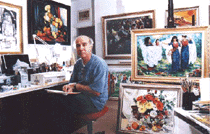

I s m a i l
Biography
Selected Paintings
Sketches
Computer Graphics
Exhibitions
T a m a m
Biography
Selected Paintings
Sketches
Exhibitions
G u e s t b o o k
Guestbook
View all entries
C o n t a c t u s
Shammout
O t h e r
R e l a t e d
T o p i c s
Art in Palestine
What's new
| Ismail Shammout |
| b i o g r a p h y . . . |
Ismail Abdul-Qader Shammout
|
 |
| 1950 | Enrolled in the College of Fine Arts in Cairo. |
| 1953 | Set up his first exhibition in the town of Gaza, (29th July 1953) the first exhibition ever to be held by a Palestinian artist in Palestine (his brother, Jamil, took part in this exhibition). |
| 1954 | Opened
his major exhibition in Cairo,with the
participation of the Palestinian artist Tamam
Aref Al-Akhal, a colleague then, and currently
his wife. The exhibition was sponsored and
inaugurated by Egyptian President Jamal
Abdul-Nasser, on the
21st July 1954. |
| 1956 | Moved to Beirut, Lebanon, where he lived and worked in various artistic and cultural endeavors. |
| 1959 | Married his artist colleague, Mss. Tamam Al-Akhal. |
| 1965 | Joined the Palestine Liberation Organization (PLO), as Director of Arts and National Culture. |
| 1969 | Elected as first Secretary General, Union of Palestinian Artists. |
| 1971 | Elected as first Secretary General, Union of Arab Artists. |
| 1983 | Moved from Beirut to Kuwait with his family, following the Israeli aggression against the PLO in Lebanon. |
| 1992 | Moved to Cologne, Germany, following the Gulf war. |
| 1994 | Settled in Amman, Jordan, where the artist currently resides. |
Ismail Shammout has the following publications: |
|
| -
The Young Artist, Beirut
(1957), Arabic. - Palestine, Illustrated Political History, Beirut (1972), various languages. - Palestinian National Art, Beirut (1978), various languages. - Palestine in Perspective, Beirut (1978), Arabic & English. - Art in Palestine, Kuwait (1989), Arabic & English. |
|